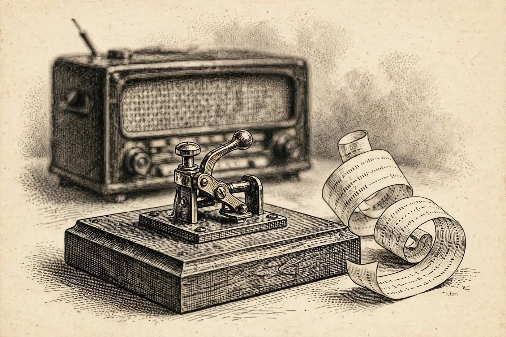

15 de diciembre
La radio muerta
Libro · págs. 64-67
Audio del día
Transcripción
«¡Han cortado el cable! ¡Estamos aislados! Eran las ocho de la tarde, la hora de la emisión con el comisario Rauch, y la radio no transmite… Mire el corte del cobre: es un tajo oblicuo y limpio, hecho con una herramienta afilada. Pero antes de que la línea se fuera a cero, quedaron anotados los últimos impulsos telegráficos. Puntos y rayas en un papel… Averigüe qué nos decía el comisario antes de quedar a oscuras.»

Intenta resolverlo primero. Abre solo lo que necesites, en este orden.
1Pista sutil
Comienza traduciendo las letras más simples de un solo signo: · es la E y - es la T. La barra / separa las palabras.
2Comprobación parcial
La primera palabra decodificada (--.- ..- .. - .- -. .. . ...- . ...) es QUITANIEVES.
3Pista fuerte
La primera palabra tiene once letras y empieza por --.- ..- .. - (Q, U, I, T…). Es la máquina que sale en el último mensaje de Rauch porque es la que vendrá a abrir el camino.
4Solución oficialSpoiler si no lo has intentado
Mensaje en Morse traducido: QUITANIEVES EL 24 A LAS 16 REUNE PRUEBAS
Para el desenlace de la historia, vuelve al libro: la sección de soluciones está al final.